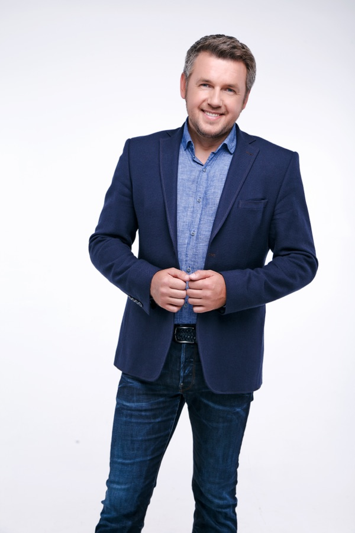

Автори проєкту
Хто веде програму
1M+Instagram
955KFacebook
615KYouTube
60+програм
Дмитро Карпачов
Психоаналітичний коуч
- Автор методу «Психоаналітичний Коучинг» — один з найефективніших сучасних підходів до особистісних трансформацій
- Експерт з дитячої вікової психології, автор бестселера «Як дати все дитині без грошей і зв'язків»
- Засновник найбільшої в Україні онлайн-школи для батьків (10+ років)
- Автор понад 60 освітніх програм з виховання дітей і особистого розвитку
- Понад 20 років досвіду психологічних консультацій
- Телезірка — ведучий 6 соціально-психологічних реаліті-шоу на національному телебаченні

Ірина Макаренко
Авторка програми Breakup Rehab
- Магістр психології (Ун-т ім. Тараса Шевченка), практикуючий психолог та психоаналітичний коуч (ПАК)
- У практиці поєднує терапевтичний підхід і коучинг, використовує метафоричні асоціативні карти
- Спеціалізація — стосунки: проживання розриву та вихід з емоційної залежності
- Авторський формат глибинної щоденної підтримки «28 днів разом» у кризових ситуаціях
- Бере участь в організації ретритів, виступає експертом на жіночих зустрічах і в закритих жіночих клубах
- 2000+ годин консультацій у темі розставань та особистісних трансформацій